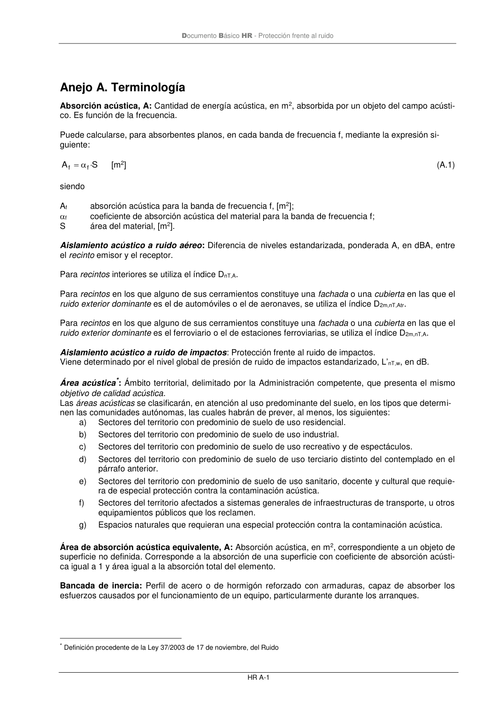

DB-HR · Anejo A. Terminología · versión 2019-12-20 · capa oficial
Formatos: JSON compacto · Markdown · PDF fuente
Ámbito del documento · texto del ámbito · documento y tablas
ID técnico a0092 · PDF pág. 43 · jerarquía no validada por persona · contrastado con el literal de la página 43 (marcador PDF); no validado por persona · padre: raíz
Anejo A. Terminología Absorción acústica, A: Cantidad de energía acústica, en m2, absorbida por un objeto del campo acústi- co. Es función de la frecuencia. Puede calcularse, para absorbentes planos, en cadabanda de frecuencia f, mediante la expresión si- guiente: S A f f · = [m2] (A.1) siendo Af absorción acústica para la banda de frecuencia f, [m2]; f coeficiente de absorción acústica del material para la banda de frecuencia f; S área del material, [m2]. Aislamiento acústico a ruido aéreo: Diferencia de niveles estandarizada, ponderada A, en dBA, entre el recinto emisor y el receptor. Para recintos interiores se utiliza el índice DnT,A. Para recintos en los que alguno de sus cerramientos constituye una fachada o una cubierta en las que el ruido exterior dominante es el de automóviles o el de aeronaves, se utiliza el índice D2m,nT,Atr. Para recintos en los que alguno de sus cerramientos constituye una fachada o una cubierta en las que el ruido exterior dominante es el ferroviario o el de estaciones ferroviarias, se utiliza el índice D2m,nT,A. Aislamiento acústico a ruido de impactos: Protección frente al ruido de impactos. Viene determinado por el nivel global de presión de ruido de impactos estandarizado, L’nT,w, en dB. Área acústica*: Ámbito territorial, delimitado por la Administración competente, que presenta el mismo objetivo de calidad acústica. Las áreas acústicas se clasificarán, en atención al uso predominante del suelo, en los tipos que determi- nen las comunidades autónomas, las cuales habrán de prever, al menos, los siguientes: a) Sectores del territorio con predominio de suelo de uso residencial. b) Sectores del territorio con predominio de suelo de uso industrial. c) Sectores del territorio con predominio de suelo de uso recreativo y de espectáculos. d) Sectores del territorio con predominio de suelo de uso terciario distinto del contemplado en el párrafo anterior. e) Sectores del territorio con predominio de suelo de uso sanitario, docente y cultural que requie- ra de especial protección contra la contaminación acústica. f) Sectores del territorio afectados a sistemas generales de infraestructuras de transporte, u otros equipamientos públicos que los reclamen. g) Espacios naturales que requieran una especial protección contra la contaminación acústica. Área de absorción acústica equivalente, A: Absorción acústica, en m2, correspondiente a un objeto de superficie no definida. Corresponde a la absorción de una superficie con coeficiente de absorción acústi- ca igual a 1 y área igual a la absorción total del elemento. Bancada de inercia: Perfil de acero o de hormigón reforzado con armaduras, capaz de absorber los esfuerzos causados por el funcionamiento de un equipo, particularmente durante los arranques. * Definición procedente de la Ley 37/2003 de 17 de noviembre, del Ruido

PDF fuente redistribuible: copia fiel enlazada en esta página (SHA256 verificado).